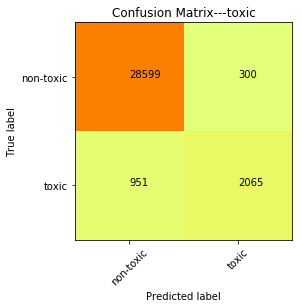
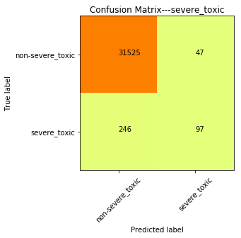
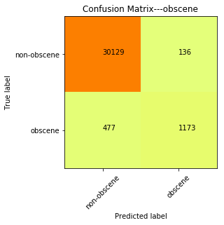
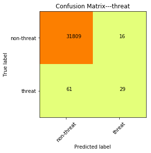
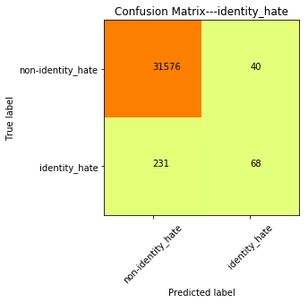

Python 3.6.4 |Anaconda, Inc.| (default, Jan 16 2018, 10:22:32) [MSC v.1900 64 bit (AMD64)]
Type "copyright", "credits" or "license" for more information.
IPython 6.2.1 -- An enhanced Interactive Python.
In [1]: runfile('C:/Users/s4380903/Downloads/code/Self work/logical_regression.py', wdir='C:/Users/s4380903/Downloads/code/Self work')

[0.9713446 0.97152766 0.97104551]
toxic train cv score is 0.9713059230219354, valid score is 0.9608021306595644

[0.9789485 0.98216561 0.9844438 ]
severe_toxic train cv score is 0.9818526385555876, valid score is 0.9908193639354536

[0.98448319 0.98368153 0.98383785]
obscene train cv score is 0.9840008585810057, valid score is 0.9807927306908977

[0.97879126 0.99164615 0.98259496]
threat train cv score is 0.9843441230420407, valid score is 0.9975873413755287
[0.97473286 0.97825082 0.97676009]
insult train cv score is 0.9765812523026508, valid score is 0.9724580918063607

[0.97322489 0.97309998 0.97163623]
identity_hate train cv score is 0.9726537026610953, valid score is 0.9915086949710168
Total accuracy is 0.9823280589064703
In [2]: